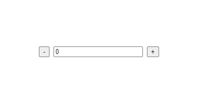
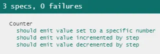
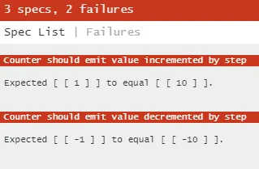
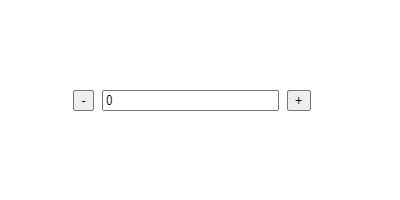

Writing Reliable Unit Tests for Our Components
Have you been painstakingly cranking out unit tests for the past few months, trying to hit and maintain the coveted > 90% code coverage, only to now find yourself rewriting them again and again because of minor changes to your codebase?
Have your users bumped into subtle bugs that your unit tests just weren’t able to catch, even though your component code is supposedly 100% covered?
Have your QA engineers been constantly asking you to add more selectors to elements in your components so that they are able to do their job and write automated tests?
In this post we’ll be going over these 3 pain points that many have experienced because of the way we sometimes write component unit tests, and then we’ll explore an alternative approach that addresses them.
📦 What are we testing?
For starters, let’s take a simple Counter component implemented in Vue:
<template>
<div>
<button type="button" @click="decrement(step)">-</button>
<input type="text" :value="value" @input="setValue($event.target.value)" />
<button type="button" @click="increment(step)">+</button>
</div>
</template>
<script>
export default {
name: 'Counter',
props: {
value: {
default: 0,
type: Number
},
step: {
default: 1,
type: Number
}
},
methods: {
setValue(value) {
this.$emit('input', parseFloat(value));
},
increment(step) {
this.setValue(this.value + step);
},
decrement(step) {
this.setValue(this.value - step);
},
},
};
</script>
Source: gist.github.com/vdsabev/b582e1f8bd1f17b07e5b36a8fd0700dd
Here’s what it looks like:

Now let’s write some unit tests using Vue Test Utils:
import { mount } from '@vue/test-utils';
import Counter from './Counter';
describe('Counter', () => {
let component;
beforeEach(() => {
component = mount(Counter);
});
it('should emit value set to a specific number', () => {
component.vm.setValue(5);
expect(component.emitted('input')).toEqual([[5]]);
});
it('should emit value incremented by step', () => {
component.vm.increment(10);
expect(component.emitted('input')).toEqual([[10]]);
});
it('should emit value decremented by step', () => {
component.vm.decrement(10);
expect(component.emitted('input')).toEqual([[-10]]);
});
});
Source: gist.github.com/vdsabev/ec4a749d8bed879a5933a6ac91322302
We’ve tested each method that our component can call, and since there isn’t much code in there it’s relatively easy to cover all of it:

But is that really enough?
🤨 What’s wrong with these tests?
Maybe nothing — at first glance they may look like perfectly acceptable tests.
After all they do give us 100% code coverage, that means we should be good, right?
Let’s see if we can agree on 3 properties of reliable component tests:
- When tests pass, the component works; when the component works, the tests pass. This gives us confidence to refactor our code.
- When tests fail, the component doesn’t work; when the component doesn’t work, the tests fail. This gives us easier debugging since failing tests pinpoint where in the code we should be looking for a bug.
- Writing tests encourages better engineering practices for our components and makes them easier to test by anyone, not just people intimately familiar with the internals. This gives us scale across the entire team, including QA and even 3rd party consumers of our components.
Now let’s see where the tests we have right now fall short.
1️⃣ Refactoring makes them fail even though our component still works
One of the benefits of having reliable unit tests is they help us refactor fearlessly. You might have noticed we pass the step prop when calling increment and decrement in the template when instead we could just access the prop in the method using this.step and clean up our template a little bit. Let’s make that small change:
<template>
<div>
<button type="button" @click="decrement">-</button> <!-- we removed the argument here -->
<input type="text" :value="value" @input="setValue($event.target.value)" />
<button type="button" @click="increment">+</button> <!-- we removed the argument here -->
</div>
</template>
<script>
export default {
...
methods: {
...
increment() {
this.setValue(this.value + this.step);
},
decrement() {
this.setValue(this.value - this.step);
},
},
};
</script>
Source: gist.github.com/vdsabev/49a247afadba4d9a16e637fef6052f05
This is just some internal refactoring, the Counter component still works, but what happens to our tests?
They break right away, because we were previously passing 10 to the method and since it no longer accepts an argument it uses the default value of the step prop which is 1!

Right about now you may be shaking your head saying — “of course they would break, what did you expect, it’s obvious?!”
Well, I expect that when my component works the exact same way as before for an end user my tests will also pass without having to change them. Think about that for a moment — does testing components like this make it easier to refactor them or more difficult? Does it remove obstacles or does it add more?
Now we have to rewrite those failing tests. Here’s what it would take to fix them:
describe('Counter', () => {
...
it('should emit value incremented by step', async () => {
await component.setProps({ step: 10 });
component.vm.increment();
expect(component.emitted('input')).toEqual([[10]]);
});
it('should emit value decremented by step', async () => {
await component.setProps({ step: 10 });
component.vm.decrement();
expect(component.emitted('input')).toEqual([[-10]]);
});
});
Source: gist.github.com/vdsabev/8ba14410866b724d9e6f475e5f2e234a
We have to set the step prop beforehand and we’re good to go for now.
2️⃣ Changing the template doesn’t make them fail even though the component no longer works
Remember when we removed that pesky step prop from the template? That cleaned it up a little bit, but we’re still passing an argument to setValue in there. So let’s clean that up as well:
<template>
<div>
<button type="button" @click="decrement">-</button>
<input type="text" :value="value" @input="setValue" /> <!-- we removed the argument here -->
<button type="button" @click="increment">+</button>
</div>
</template>
Source: gist.github.com/vdsabev/95085ea56314a65b04b5332d7980ba0f
Ah, looks much better, and our tests are still green!
Wait, what happened to our component?

We just deleted the argument from setValue which was sending the input element’s value — and now typing in the input no longer works because it calls setValue with $event instead of $event.target.value
And our tests, with their glorious 100% of code coverage, did exactly nothing to protect us from that.
You may think you’re a careful and experienced developer and would never make a silly mistake like that. But let me ask you this — are you the only person working on this project — now and forever?
Besides, mistakes don’t happen solely due to inexperience — people get tired because of long working hours, distracted by children or pets, or stressed out when an important deadline looms close.
(I also sincerely hope you don’t drive with no seatbelt on just because you think you’re a careful and experienced driver)
3️⃣ They don’t help us make the component easier to test from the outside
How would a QA engineer write an automated script that tests this component in the UI? Maybe query for the buttons with JavaScript like this:
const decrementButton = document.querySelectorAll('button')[0];
const incrementButton = document.querySelectorAll('button')[1];
This works for now, but what if we put out a new design that switches the order of the DOM nodes and renders them vertically like in the HTML number input?
Alternatively, a QA engineer could select the buttons by their text content - or + which is a viable approach but also has trade-offs — for example it would break if we replaced the text content with equivalent icons.
Classes also work but could be inadvertently removed by a developer who doesn’t know they’re used for testing.
And so in this specific case I prefer aria-label:
<template>
<div>
<button type="button" @click="decrement" aria-label="Decrement">-</button>
<input type="text" :value="value" @input="setValue($event.target.value)" />
<button type="button" @click="increment" aria-label="Increment">+</button>
</div>
</template>
Source: gist.github.com/vdsabev/3fd65aef13dad153d5c3a90562bc7397
It’s explicit, meaningful, and yes it does happen to make our component more accessible to users with special needs, but more importantly in this case — to our QA engineers.
However, no matter which approach to selecting elements we take, the component tests we have right now leave the QA team as an afterthought. We’re likely to only add the selectors when we’re asked to do so by someone else trying to test our component from the outside (and failing miserably).
In summary, there’s an ancient Zen saying that describes our predicament succinctly:
💭 Checking whether a component behaves correctly by testing its internals is like judging a tapestry by looking at its back side.
Yes, I know that’s embroidery 🤓
🤔 What’s a reliable test supposed to do?
As long as a component looks and behaves the same, unit tests should leave us free to rework our code so we can make it easier to maintain. Also, code that affects component behavior should be tested, even if it doesn’t get captured in a coverage report. Finally, components should be accessible for testing from the outside.
So how do we actually do that?
import { mount } from '@vue/test-utils';
import Counter from './Counter';
describe('Counter', () => {
let component;
beforeEach(() => {
component = mount(Counter);
});
it('should emit value set to a specific number', async () => {
const input = component.find('input'); // find the input
input.element.value = '5'; // set the input value
await input.trigger('input'); // trigger an `input` event
expect(component.emitted('input')).toEqual([[5]]);
});
it('should emit value incremented by step', async () => {
await component.setProps({ step: 10 });
await component.find('[aria-label="Decrement"]').trigger('click'); // find+click the button
expect(component.emitted('input')).toEqual([[10]]);
});
it('should emit value decremented by step', async () => {
await component.setProps({ step: 10 });
await component.find('[aria-label="Increment"]').trigger('click'); // find+click the button
expect(component.emitted('input')).toEqual([[-10]]);
});
});
Source: gist.github.com/vdsabev/299ca73693fb5087e343e6a0e14e23af
What’s going on here? First, we select the DOM node we want to test using component.find, then trigger the corresponding event.
Remember the issues we had while refactoring our component code before? As expected, the first test would’ve caught the incorrect argument of setValue, and the second and third tests would still be passing after removing the step prop from the template.
This is also where we make use of the aria-label attributes, and because we needed to set those to select the elements in our unit tests, accessibility to QA is now a first-class citizen!
You might still have some questions right about now.
🙋♂ Isn’t this unnecessarily testing the framework?
We’re testing the event bindings we wrote in the HTML template, not the internal workings of Vue. In fact these tests aren’t even specific to Vue — we could just as well write our own mount function and re-implement the component in another framework while still keeping our tests unchanged.
If we want to be able to trust our test suite, then all code that affects component behavior should be tested, even if it’s “just HTML”, maybe even if it’s CSS like display: none or pointer-events: none which can change how users interact with an element.
And the earlier we can test it, the better — bugs don’t have to be caught by a QA engineer after our code has already passed multiple developer reviews and gone through 60-minute cycles of CI/CD build and deploy.
🙋♀ Isn’t this more work?
There are trade-offs to any approach. In this case the first test is 2 lines longer, and we do need to learn how to work with the DOM and think about what selectors to put in our code beforehand.
What if instead of thinking about those extra few lines of code we were to consider all the hours saved by not having to fix subtle bugs, rewrite tests because of minor code refactors, or have back-and-forth discussions about selectors with our QA engineers?
🙋♀ Isn’t this way of testing non-obvious?
This approach is far from niche — in fact testing the component’s public interface and template logic is even mentioned in the Vue Test Utils docs. There are also libraries that specifically focus on this school of testing, the best know of which is the aptly named Testing Library utilities.
Last but not least — keep in mind that QA engineers have been black-box testing for decades, and there’s a lot we could learn from each other.
🏁 In summary
You do need a mental shift to write tests this way — it’s not always easy or clear-cut, especially when using 3rd party components in your templates that don’t have accessible selectors.
I hope you’ll find that once you start thinking about the front side of the tapestry you’ll be noticing opportunities to write more reliable tests everywhere.
Tags: Vuejs, Testing, Software Development, Vue Test Utils, Quality Assurance
Original article: medium.com/@vdsabev/writing-reliable-unit-tests-for-our-components-d29f3de69240